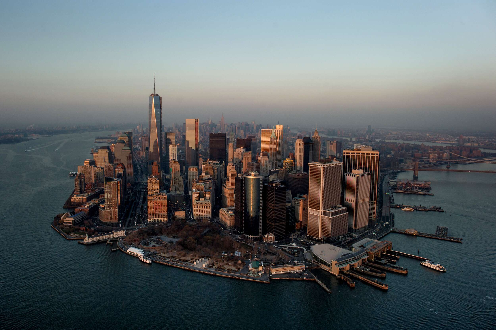
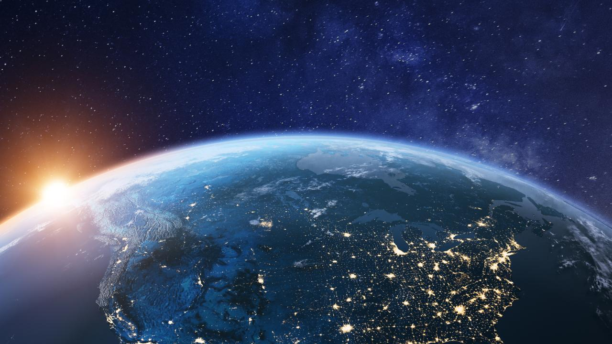
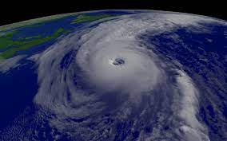
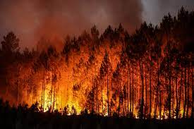
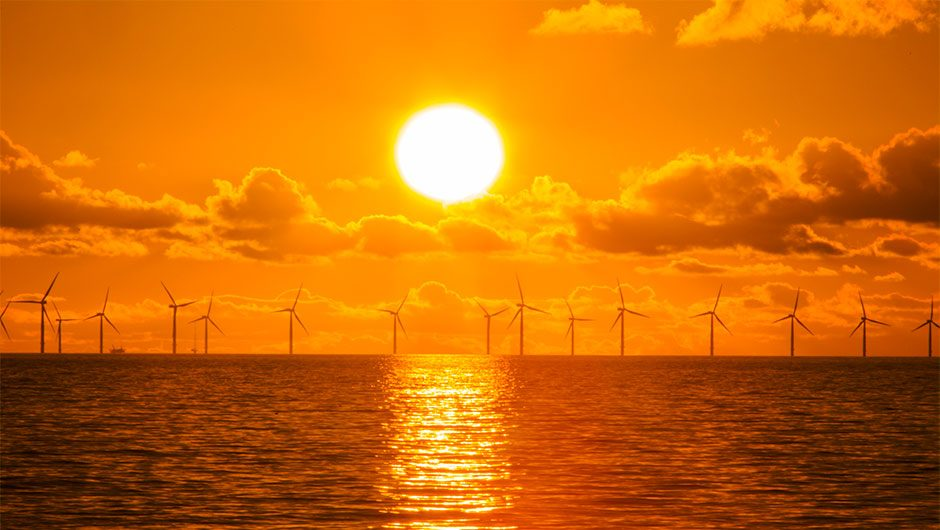
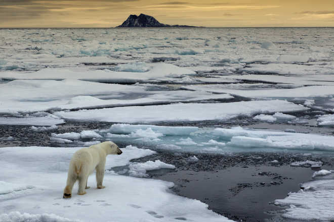

Global climate change is not a future problem. Changes to Earth’s climate driven by increased human emissions of heat-trapping greenhouse gases are already having widespread effects on the environment: glaciers and ice sheets are shrinking, river and lake ice is breaking up earlier, plant and animal geographic ranges are shifting, and plants and trees are blooming sooner.
Effects that scientists had long predicted would result from global climate change are now occurring, such as sea ice loss, accelerated sea level rise, and longer, more intense heat waves.
Some changes (such as droughts, wildfires, and extreme rainfall) are happening faster than scientists previously assessed. In fact, according to the Intergovernmental Panel on Climate Change (IPCC) — the United Nations body established to assess the science related to climate change — modern humans have never before seen the observed changes in our global climate, and some of these changes are irreversible over the next hundreds to thousands of years.
Scientists have high confidence that global temperatures will continue to rise for many decades, mainly due to greenhouse gases produced by human activities.

The IPCC’s Sixth Assessment report, published in 2021, found that human emissions of heat-trapping gases have already warmed the climate by nearly 2 degrees Fahrenheit (1.1 degrees Celsius) since pre-Industrial times (starting in 1750).1 The global average temperature is expected to reach or exceed 1.5 degrees C (about 3 degrees F) within the next few decades. These changes will affect all regions of Earth.
What’s the difference between climate change and global warming?
The severity of effects caused by climate change will depend on the path of future human activities. More greenhouse gas emissions will lead to more climate extremes and widespread damaging effects across our planet. However, those future effects depend on the total amount of carbon dioxide we emit. So, if we can reduce emissions, we may avoid some of the worst effects.
Future effects of global climate change in the world:
Here are some of the expected effects of global climate change on the United States, according to the Third and Fourth National Climate Assessment Reports.
- Rise in Sea Level
- Rise in Earth's temperature
- Rise in Hurricanes
- Rise in Drought and Heat Waves
- Rise in Forest Fire
1. Sea Level Will Rise 1-8 feet by 2100
Global sea level has risen about 8 inches (0.2 meters) since reliable record-keeping began in 1880. By 2100, scientists project that it will rise at least another foot (0.3 meters), but possibly as high as 8 feet (2.4 meters), if we continue carbon emissions at our current rate. Sea level is rising because of added water from melting land ice and the expansion of seawater as it warms.

2. Climate Changes Will Continue Through This Century and Beyond
Global climate is projected to continue warming over this century and beyond. The degree of climate change and severity of impacts ultimately depend on the amount of heat-trapping gases emitted by humans and how sensitive Earth’s climate is to those emissions.

3. Hurricanes Will Become Stronger and More Intense
The intensity of North Atlantic hurricanes, as well as the frequency of the strongest (Category 4 and 5) hurricanes, have all increased since the early 1980s. Scientists project that hurricane-associated storm intensity and rainfall rates will increase as the climate continues to warm.

4. More Droughts and Heat Waves
Droughts in the Southwest and heat waves (periods of abnormally hot weather lasting days to weeks) are projected to become more intense, and cold waves less intense and less frequent.
All seasons are projected to continue to get hotter. By the end of this century, if we continue emitting greenhouse gases at our current rate, extreme heat events that used to occur only once in 20 years are expected to occur every year.

5.Longer Wildfire Season
Warming temperatures have made the wildfire season longer and more severe in the West, and deepening drought in the region has added to the risk of fires. Scientists estimate that human-caused climate change has already doubled the area of forest burned in recent decades. By around 2050, the amount of land consumed by wildfires in Western states is projected to further increase by two to six times. Even in rainy regions like the Southeast, wildfires are projected to increase by about 30%.
Globally, fire weather seasons have lengthened. Drought remains the dominant driver of fire emissions, but recently there has been increased fire activity in some tropical and temperate regions due to warmer temperatures that increase vegetation flammability. The northern boreal zone (Earth's northernmost forests) near the Arctic is also experiencing larger and more frequent fires, and this may increase under a warmer climate.
More fires and a longer fire season are causing an additional health hazard of wildfire smoke, which affects tens of millions of people in the United States. Meanwhile, the costs of fighting wildfires have risen 11-fold over the past 30 years, adding a financial burden on top of the public health risk.

6. Changes in Precipitation Patterns
Climate change is having an uneven effect on precipitation (rain and snow) in the United States, with some locations experiencing increased precipitation and flooding, while others experience drought. Scientists project more winter and spring precipitation for the northern United States, and less for the Southwest, over this century.
Projections of future climate over the U.S. suggest that the recent trend toward increased heavy precipitation events will continue. This means that while it may rain less frequently in some regions (such as the Southwest), when it does rain, heavy downpours will be more common.
7. Frost-Free Season (and Growing Season) will Lengthen
The length of the frost-free season, and the corresponding growing season, has been increasing since the 1980s, with the largest increases occurring in the western United States. Across the United States, the growing season is projected to continue to lengthen, which will affect ecosystems and agriculture.
If heat-trapping gas emissions continue to grow at current rates, increases of a month or more in the length of the growing season are projected across most of the United States by the end of the century, with slightly smaller increases in the northern Great Plains. The frost-free season could become more than eight weeks longer in parts of the western United States, particularly in high elevation and coastal areas. The increases will be considerably smaller if we reduce our emissions of heat-trapping gases.
8. Global Temperatures Will Continue to Rise
The climate of the United States is directly linked to the changing global climate. The last eight years have been the hottest years on record for the globe. Recent research shows that current global temperatures and the rate of the current warming are both unprecedented over the past 24,000 years. These trends are expected to continue, but reducing greenhouse gas emissions would lessen the amount of warming in the future.

9. Arctic Is Very Likely to Become Ice-Free
Sea ice cover in the Arctic Ocean is expected to continue decreasing, and the Arctic Ocean will very likely become essentially ice-free in late summer if current projections hold; this change is expected to occur before mid-century.
